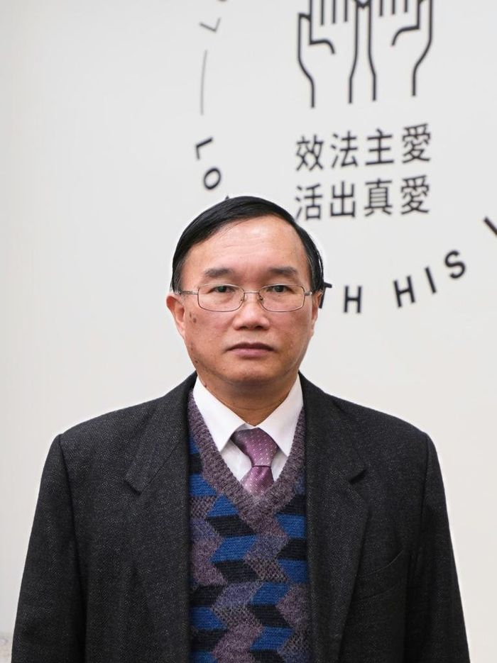

OUR TEAM

Rev. E T Wong (Senior Pastor)
Rev. ET Wong was born in Hong Kong. He grew up in a Christian family and accepted Jesus at a young age. After receiving a calling from the Lord, he equipped himself at Carey Baptist College in New Zealand and obtained his Master of Applied Theology. He has been ministering our church English congregation for over 10 years.

Pastor Herman Yeung (English service)
Pastor Herman Yeung was born in Hong Kong. He accepted Jesus and got baptised during his secondary school years. After completing his secondary education, he relocated to New Zealand for further studies. After receiving a calling from God, he equipped himself at Carey Baptist College in New Zealand and obtained a Bachelor's degree in Applied Theology and a Diploma in Pastoral Leadership. He has been ministering to our church’s English congregation since 2024.

Rev. Mureen Wong (Cantonese service)
Rev. Mureen Wong was born in Hong Kong. She is married with two daughters. She has been pastoring for more than 10 years and has a Master of Divinity and a Master of Marriage and Family Therapy. She came to New Zealand in early 2023 and is now serving our Cantonese congregation.

Rev. Manuel Lam (Cantonese service)
Rev. Manuel Lam was born in Hong Kong. He is married with two daughters. He accepted Jesus during his secondary school years. After receiving a calling from God, he equipped himself at Evangel Seminary in Hong Kong and obtained his Master of Divinity. He has been pastoring for more than 10 years in Hong Kong. He came to New Zealand and has been ministering to our church’s Cantonese congregation since early 2025.

Pastor Ernest Kwok (Mandarin service)
Pastor Ernest Kwok was born in Hong Kong. He accepted Jesus and got baptised when he was at high school. He studied in Taiwan, then migrated to New Zealand. After receiving a calling from the Lord, he went back to Hong Kong and equipped himself at Chinese Mission Seminary and obtained his Master of Divinity. He has served in the affiliated churches of Evangelize China Fellowship and Lutheran Church-Hong Kong Synod in Hong Kong. He has been ministering to our church's Mandarin congregation since 2022.